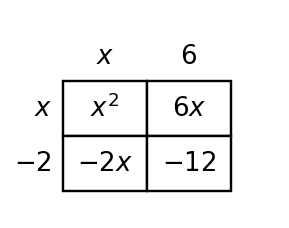

Algebra Practice 4.4 :::: Set 2
1. Multiply $(x+2)(x+1)$ and write the result in standard form.
2. Use the complete area model to write the polynomial product in expanded form.

3. Use the table to compare $(x-6)(x+2)$ and $x^2 - 4x - 12$ at the listed inputs. What does the agreement suggest about the two expressions, and which polynomial operation confirms it?
| x | $(x-6)(x+2)$ | $x^2 - 4x - 12$ |
|---|---|---|
| -1 | -7 | -7 |
| 0 | -12 | -12 |
| 2 | -16 | -16 |
4. A student simplifies $(5x^2 + 4x - 6)-(3x^2 - 4x + 3)$ as $2x^2 - 3$. Identify the subtraction error and give the correct result.
5. Simplify $(3x^2 - 2x + 4)+(-x^2 + 3x - 4)$.
6. Use the table to compare $(x+1)(x-1)$ and $x^2 - 1$. What polynomial product is represented?
| x | $(x+1)(x-1)$ | $x^2 - 1$ |
|---|---|---|
| -1 | 0 | 0 |
| 0 | -1 | -1 |
| 2 | 3 | 3 |
7. Complete the missing cell products in the area model, then combine like terms to expand the product.

8. Multiply $(x-3)(x-1)$ and write the result in standard form.
9. Complete the missing cell products in the area model, then combine like terms to expand the product.

10. Use the table and multiplication to verify that $(x-4)(x-4)$ simplifies to $x^2 - 8x + 16$.
| x | $(x-4)(x-4)$ | $x^2 - 8x + 16$ |
|---|---|---|
| -1 | 25 | 25 |
| 0 | 16 | 16 |
| 2 | 4 | 4 |
11. A student combines $3x^2+7x+2x^2$ as $12x^2$. Explain the error and simplify correctly.
12. Simplify $(4x^2 - 3x + 4)+(-x^2 + 4x - 5)$.
13. The table gives matching outputs for $(x-1)(x-4)$ and $x^2 - 5x + 4$. Confirm the equivalence algebraically.
| x | $(x-1)(x-4)$ | $x^2 - 5x + 4$ |
|---|---|---|
| -1 | 10 | 10 |
| 0 | 4 | 4 |
| 2 | -2 | -2 |
14. Use the area model to connect the factored form to the expanded form of the same polynomial.

15. Multiply $(x-1)(x+5)$ and write the result in standard form.
16. Use the partial area model for $(x-2)(x+6)$. Fill the two missing linear cell products and use all four cells to justify the expanded form.

17. The table gives matching outputs for $(x-4)(x-4)$ and $x^2 - 8x + 16$. Confirm the equivalence algebraically.
| x | $(x-4)(x-4)$ | $x^2 - 8x + 16$ |
|---|---|---|
| -1 | 25 | 25 |
| 0 | 16 | 16 |
| 2 | 4 | 4 |
18. A student expands $-3(x^2-3x+2)$ as $-3x^2+9x+6$. Correct the distribution.
19. Solve the system $y=-3x-7$ and $y=x+1$. State the solution.
20. Solve the system $y=-x-4$ and $y=-2x-4$. State the solution.
21. Solve the system $y=-3x-4$ and $y=x$. State the solution.
22. Write the linear equation represented by the table. Identify the rate of change and starting value.
| x | y |
|---|---|
| 0 | 0 |
| 1 | -2.5 |
| 2 | -5 |
23. Write the linear equation represented by the table. Identify the rate of change and starting value.
| x | y |
|---|---|
| 0 | -4 |
| 1 | -2.5 |
| 2 | -1 |
24. Write the linear equation represented by the table. Identify the rate of change and starting value.
| x | y |
|---|---|
| 0 | 5 |
| 1 | 2.5 |
| 2 | 0 |